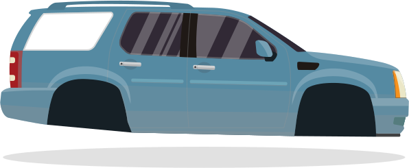

Домашка №12
translate (x, y) - зміщує елемент на нове місце, переміщаючи відносно початкового положення об'єкта вправо та вниз, використовуючи координати X та Y. Записується так translate (x,y)
scale (x) - масштабує елементи, роблячи їх більшими або меншими
rotate (n + deg) - повертає елементи
skew (x + deg, y + deg) - деформує (нахиляє) елементи
transform-origin - дозволяє змістити центр трансформації, щодо якого відбувається зміна положення/розміру/форми елемента
perspective, perspective-origin - встановлення глибини та зміна точки початку координат
